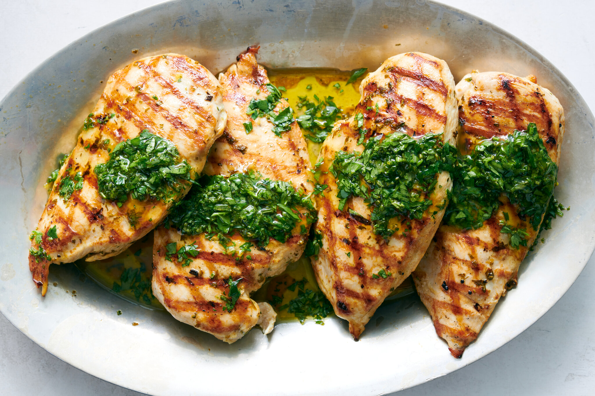

Macaroni And Cheese

Big Lou's Chicken will have you licking your lips.
Ingredients
- Chicken Breasts: 2 boneless, skinless chicken breasts.
- Olive Oil: 2 tablespoons to ensure the chicken is moist and gets a nice golden color.
- Fresh Herbs: 2 tablespoons finely chopped (a mix of rosemary, thyme, and parsley works well).
- Garlic: 3 cloves, minced, for added flavor.
- Salt and Pepper: To taste, for seasoning.
Directions
- Preheat your oven to 400°F (200°C).
- In a bowl, mix together the olive oil, chopped herbs, minced garlic, salt, and pepper.
- Rub the herb mixture over the chicken breasts, ensuring they are well-coated.
- Place the chicken breasts in a baking dish and bake for about 20-25 minutes or until the chicken is cooked through.
- Once done, let the chicken rest for a few minutes before serving. This ensures it remains juicy.
Home